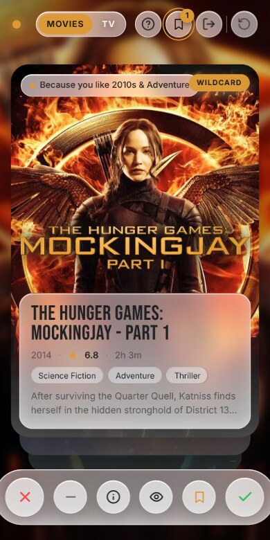
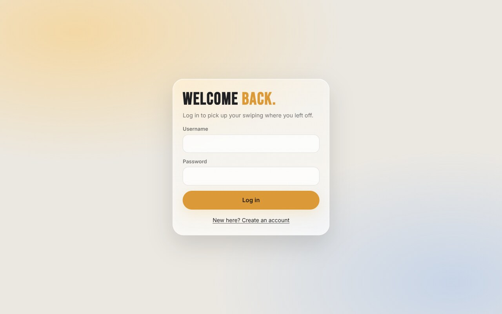
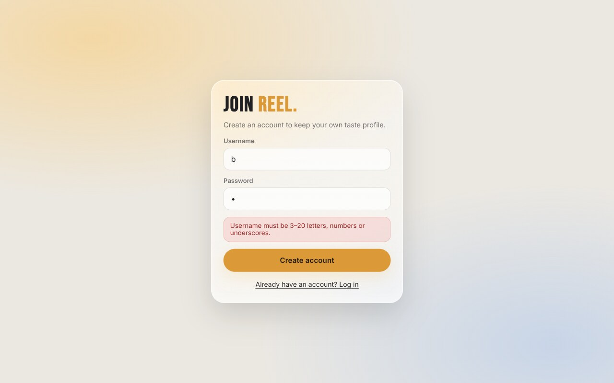
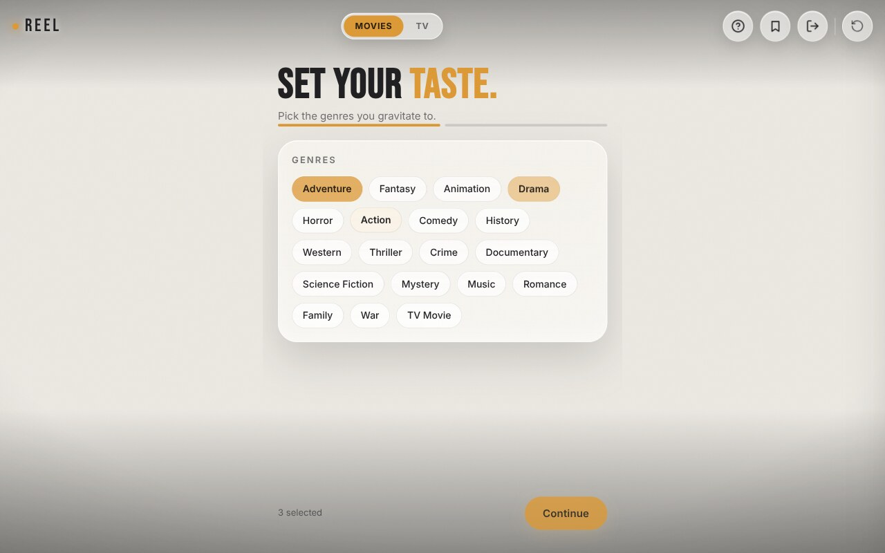
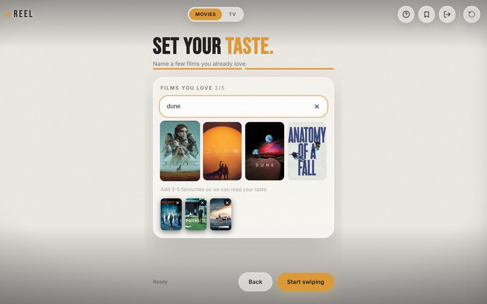
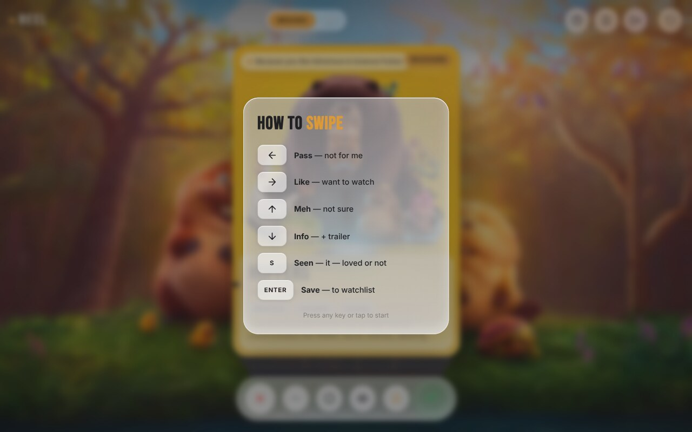
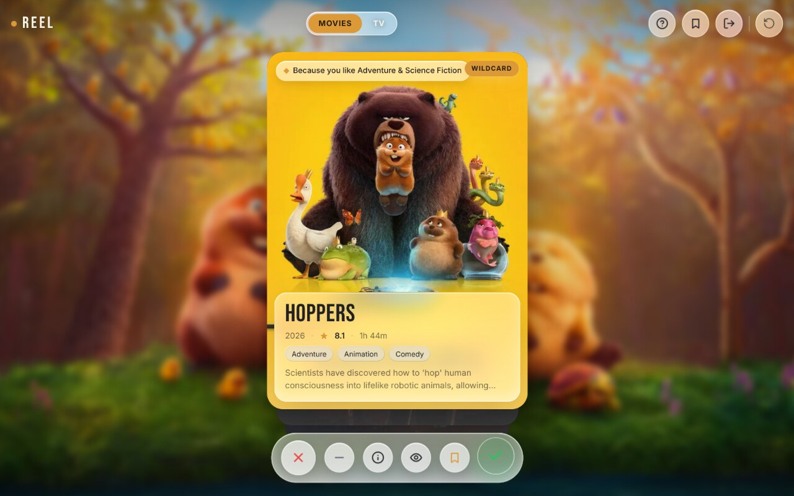
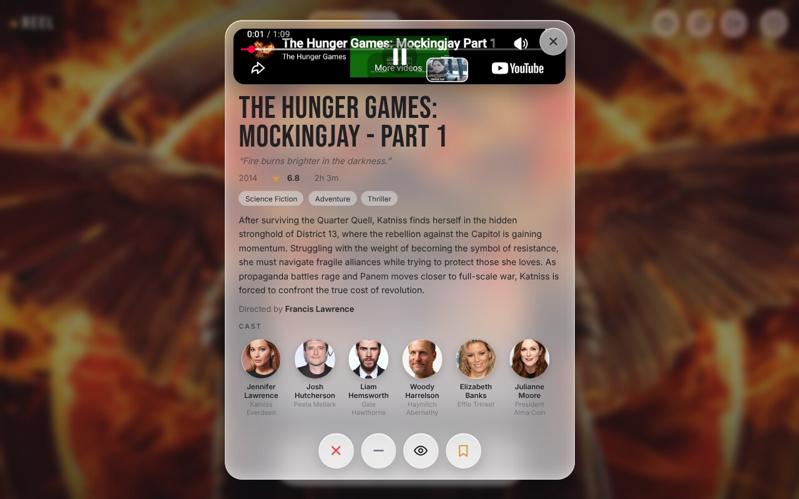
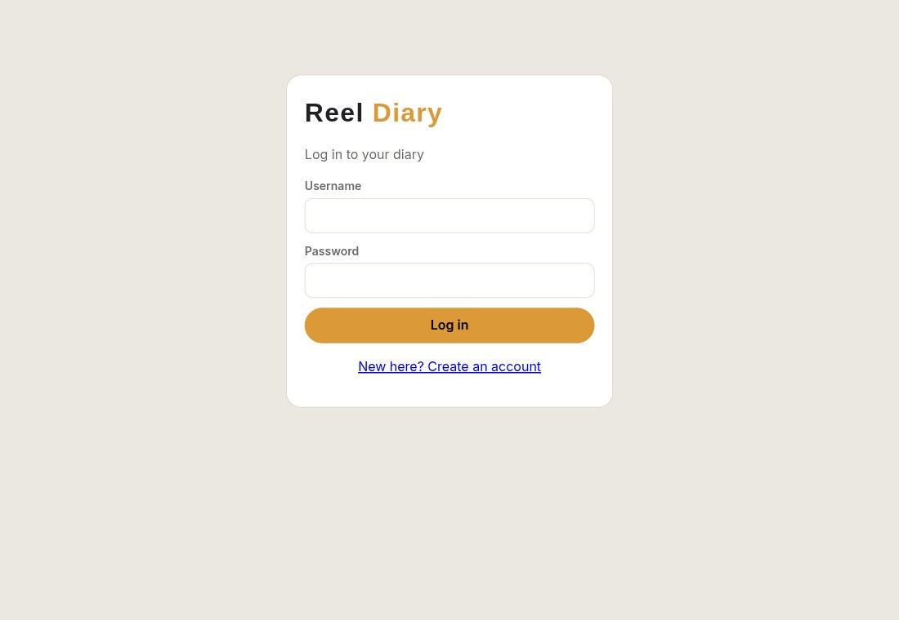
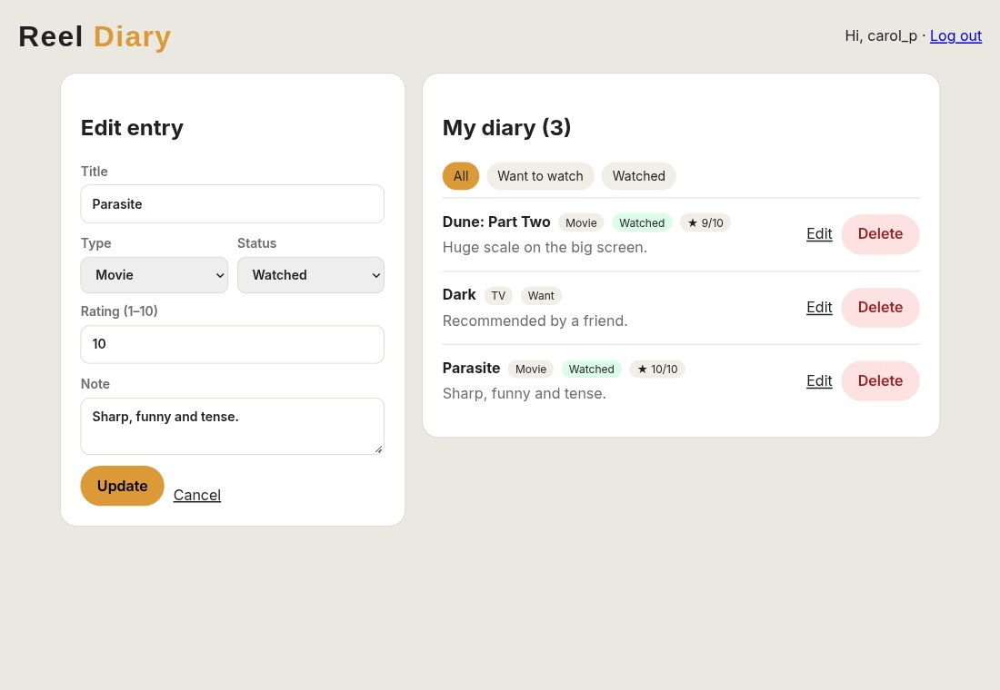

A swipe-based movie and TV recommendation system built with HTML, CSS, JavaScript, React, Node.js, Express, SQLite, PHP and MySQL.
Modern streaming services offer tens of thousands of titles, yet viewers routinely spend longer choosing than watching. Browsing long grids of posters is tiring, and generic “top 10” lists ignore personal taste. Recommendation engines address this, but most of them are hidden inside commercial platforms and are hard to inspect, which makes them a poor way to learn how such a system actually works.
At the same time, mobile applications have popularised a very fast interaction style: a stack of cards where a single gesture — a swipe — expresses a decision. The gesture is cheap, so users give far more feedback than they would by filling in ratings, and that feedback can be turned into a profile almost immediately.
The Web Technologies course covers a wide range of topics: markup and styling, client-side scripting, single-page applications, server-side scripting with a relational database, and a full-stack JavaScript back end. A course project should show that these topics fit together. A movie recommender is a good vehicle because it needs every layer: a polished, accessible interface; rich client-side interaction; a database that remembers each user; authentication; and a third-party API.
To design and implement a multi-user web application that learns a person’s taste from quick yes/no style feedback on movies and television shows, and uses what it learns to choose what to show next — while demonstrating, in working code, the technologies taught in the course.
The system covers account management, onboarding, recommendation, the swipe deck, detail view, watchlist and reset. Movie and TV data are read from TMDB and are not stored permanently except for a local cache of the responses. The application is a learning project: it is not deployed behind HTTPS, it does not send e-mail, and it does not stream any video itself (trailers are embedded from YouTube).
Suggested practicals and their counterpart in the project.
| No. | Practical | Where it appears |
|---|---|---|
| 1 | Basic page: headings, lists, images | Login page structure, overlay lists, poster images |
| 2 | Semantic HTML tags | header, main, aside, article, section |
| 3 | CSS inline, internal, external | External style.css and diary.css; internal <style> block and inline style attribute in index.html; inline styles for dynamic background images |
| 4 | Responsive page: Flexbox, Grid, media queries | Top bar, poster grids, 520 px breakpoint |
| 5 | CSS positioning | Fixed top bar and action bar, absolutely positioned card layers and stamps |
| 6 | Linking JavaScript, events, array functions | map, filter, some, reduce in app.jsx and recommend.js |
| 7 | Front-end functionality and form validation | Login form validation; onboarding rules (3–5 titles) |
| 8 | React SPA with functional components and JSX | app.jsx, login.html |
| 9 | React props, state, hooks, events, conditional rendering | Field, Card, Onboarding, DetailView |
| 10 | Fetch and display API data (JSON) | api() helper; deck, search and details |
| 11 | DOM manipulation and events | Drag gestures with Pointer Events; keyboard shortcuts |
| 12 | PHP: forms, validation, strings, sessions | login.php, index.php |
| 13 | PHP + MySQL connectivity and CRUD | db.php, schema.sql, index.php |
| 14 | Node.js and Express server, routing, static files | server.js |
| 15 | REST API with Node, Express and database | /api/*, db.js |
| 16 | Course project | This project |
A recommender system predicts which items from a large catalogue a particular user is likely to value. The literature usually groups the approaches into three families (Adomavicius and Tuzhilin, 2005; Ricci et al., 2015):
All three suffer from the cold-start problem: a new user has no history, so the system has nothing to base a recommendation on. Reel uses a content-based approach, because it is explainable and works for one user at a time, and it attacks the cold-start problem with a short onboarding step and by seeding recommendations from the titles the user says they already love.
Card-stack interfaces ask for one decision at a time and make every decision reversible in effort — a swipe takes under a second. This yields a dense stream of implicit and explicit feedback. Reel extends the usual two-way swipe with a third and fourth gesture (up for “meh”, down for details) and with two buttons for titles the user has already seen, because the system should be able to learn from films the user has watched as well as from films they want to watch.
Reel compared with common ways of choosing something to watch.
| Approach | Strengths | Weaknesses | How Reel differs |
|---|---|---|---|
| Streaming-service home page | Large catalogue, personalised rows | Opaque; limited to one service; passive | Active feedback; every suggestion states its reason |
| Critic lists and “top 10” | Easy, no account needed | Same for everyone | Per-user taste profile |
| Rating websites | Detailed reviews and scores | Rating many titles is slow | One gesture per title; profile builds within minutes |
| Social recommendation | Trusted source | Needs friends who share taste | Works for a single user, no social graph |
HTML5 semantic elements (header, main, section, aside, article) describe the structure of a page in a way that assistive technology understands. CSS custom properties hold the design tokens, Flexbox and Grid handle layout and media queries adapt the layout to the screen. The Web Content Accessibility Guidelines (WCAG 2.2) inform label usage, focus styles, colour contrast and reduced-motion support.
JavaScript provides event handling, DOM manipulation and asynchronous communication. The Fetch API with async/await is used for every request to the back end, and the Pointer Events API drives the drag gestures on the card.
React is a library for building user interfaces from components. State is held with the useState hook, side effects with useEffect, and the interface is a function of the current state. Reel uses it for the login page and for the whole single-page application.
Node.js runs JavaScript on the server. Express adds routing and middleware, which is how the REST API, authentication check and static-file serving are organised. Node’s built-in node:sqlite module provides the embedded database, and node:crypto provides password hashing.
PHP is a server-side scripting language that generates HTML on each request. With PDO and prepared statements it talks to MySQL safely, and its session functions maintain a logged-in state. It is used here for the Watch Diary module.
The Movie Database (TMDB) offers a free REST API with metadata, posters, cast, keywords and trailers for movies and television. Reel uses its discover, search, trending, recommendations, genre list and details endpoints. The API key is kept on the server and is never sent to the browser.
Reel follows a classic client–server architecture. The browser downloads static files (HTML, CSS, JSX) from the Express server and then talks to it only through a JSON REST API. The server owns all state: users, sessions, taste profiles, history and lists. It reaches TMDB over HTTPS and caches what it receives. The PHP module is independent and has its own database; it shares only the design language.
Source files and their single responsibility.
| File | Responsibility |
|---|---|
server.js | Creates the Express app, mounts routes, serves the frontend folder, validates request input. |
auth.js | Register, login, logout, password hashing, rate limiter, requireLogin middleware. |
recommend.js | Chooses the next cards from the taste profile. |
tmdb.js | TMDB client with retry and cache; converts raw data to tags and cards. |
db.js | Creates tables and exposes small query functions. |
app.jsx | The React single-page application. |
login.html | The React login and registration page. |
style.css | Design tokens, layout, glass surfaces, responsive rules. |
reel-php/*.php | Watch Diary: login, logout, CRUD page, database helper. |
The engine asks for a batch of ten cards. Seventy per cent (the main pool) come from the user’s three highest-scoring genres, excluding any genre whose score has fallen to −3 or below; the remaining thirty per cent (wildcards) come from the next five genres, or from the trending list when the profile is still thin. A new user — fewer than fifteen swipes — gets the main pool from TMDB’s “recommendations” for one of the titles they said they love. Candidates are fetched, their cached details are loaded, and each is given a fit equal to the sum of its tag scores. The main cards are sorted by fit and the wildcards are inserted at random positions.
POST /api/next).The screens below show the working application: login and registration with client-side validation, the two onboarding steps, the controls overlay, the swipe deck, the detail view, the watchlist and the mobile layout.










Reel shows that a small, explainable algorithm combined with a well-designed interface can turn rapid, low-effort feedback into useful recommendations. The project met its objectives: users register and log in securely, each person has independent Movies and TV taste profiles, the deck adapts to every response and explains itself, and the application remains usable on both desktop and phone.
From the course point of view, the same product exists in several forms of the same technology stack — static markup and styles, scripted DOM behaviour, a React single-page application, an Express REST API with a SQLite database, and a PHP/MySQL CRUD application — which made the differences between the approaches concrete. The debugging story of the first version (a native module built for another Node.js version, and a hard-coded IP address) also illustrated why dependencies and configuration deserve as much care as features.
node:sqlite)” and “Crypto (scrypt),” nodejs.org/api. Accessed Oct. 2026.password_hash, sessions,” php.net/manual. Accessed Oct. 2026.